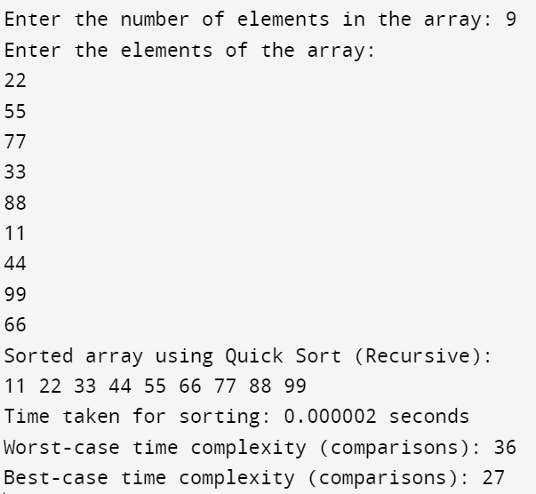

#include<stdio.h>
#include<time.h>
#include<stdlib.h>
#include<math.h>
void swap(int *a, int *b) {
int temp = *a;
*a = *b;
*b = temp;
}
int partition(int arr[], int low, int high) {
int pivot = arr[high];
int i = (low - 1);
for (int j = low; j <= high - 1; j++) {
if (arr[j] < pivot) {
i++;
swap(&arr[i], &arr[j]);
}
}
swap(&arr[i + 1], &arr[high]);
return (i + 1);
}
void quickSort(int arr[], int low, int high) {
if (low < high) {
int pi = partition(arr, low, high);
quickSort(arr, low, pi - 1);
quickSort(arr, pi + 1, high);
}
}
int main() {
int n;
printf("Enter the number of elements in the array: ");
scanf("%d", &n);
int arr[n];
printf("Enter the elements of the array:\n");
for (int i = 0; i < n; i++) {
scanf("%d", &arr[i]);
}
clock_t start_time, end_time;
start_time = clock();
quickSort(arr, 0, n - 1);
end_time = clock();
printf("Sorted array using Quick Sort (Recursive):\n");
for (int i = 0; i < n; i++) {
printf("%d ", arr[i]);
}
double execution_time = (double)(end_time - start_time) / CLOCKS_PER_SEC;
printf("\nTime taken for sorting: %f seconds\n", execution_time);
// Worst-case time complexity O(n^2)
int worst_case_comparisons = n * (n - 1) / 2;
printf("Worst-case time complexity (comparisons): %d\n", worst_case_comparisons);
// Best-case time complexity O(n*log(n))
int best_case_comparisons = n * (int)(log2(n));
printf("Best-case time complexity (comparisons): %d\n", best_case_comparisons);
return 0;
}
Output:
